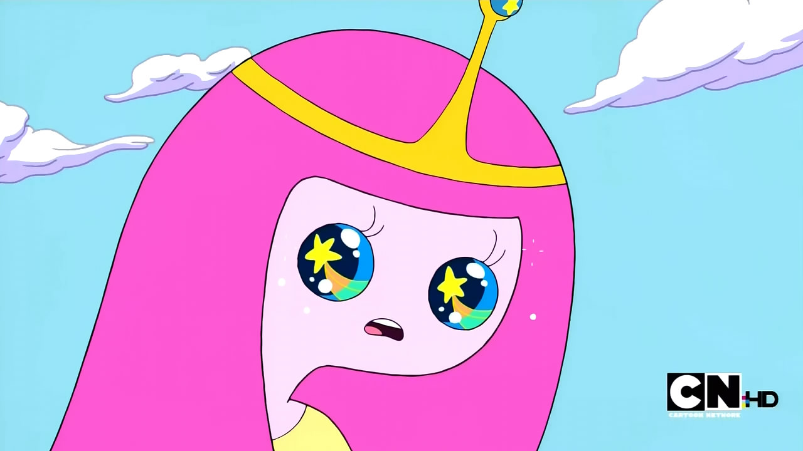

Cinderella wearing European fashion of the mid-1860’s
Rapunzel, clothed in 1820’s period fashion
Belle, based on 1770’s French court fashion
Mulan, based on the Ming Dynasty period
Sleeping Beauty, based on European fashions in 1485
Pocahontas based on 17th century Powhatan costume
Snow White, based on 16th century German fashion
Ariel wearing an evening gown of the 1890’s
Tiana wearing the robe de style of the 1920’s
Art © Claire Hummel